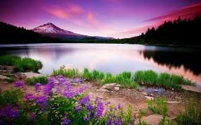
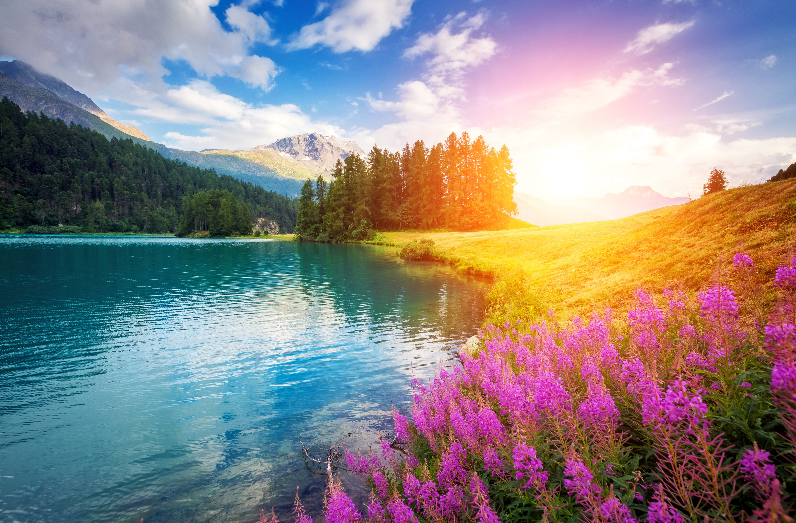

Experience Europe through our stories
Georgia is a gorgeous country. Despite its small size, the country is anything but boring. Georgia boasts many diverse, breathtaking natural wonders in its different regions. Mesmerizing rolling green hills, snow-capped mountains, beautiful, green highland pastures, gorgeous waterfalls, creeks, canyons, magnificent caves: Georgia has it all. While Georgia is perhaps most known for its heavenly mountainous scenery, the country also has a sub-tropical zone on the coast of Black Sea where you will find pretty seaside towns such as Batumi and Chakvi. Be prepared to be wowed by Georgia’s pristine natural beauty no matter which part of the country you go to!

ABOUT
Nepalese believe that Pokhara, a valley that offers close-up views of some of the most beautiful mountains on Earth, is “Heaven on Earth” . The name “Pokhara” comes from a Nepali word, “Pokhari” which means pond. Pokhara has long held reputation of being one of the most beautiful cities in Nepal, and for me, this holds true. Not necessarily for the city itself, but for the incredible nature that surrounds this picturesque valley.

TAKE ACTION
Barely a thirty-minutes ride away from Trapani on a hydrofoil, Favignana was worlds away from the chaos of city life. There were almost no cars and most tourists either opted for scooters or bicycles to go around the island. The day when we were there couldn’t have been more perfect weather-wise, although the sea was pretty chilly.